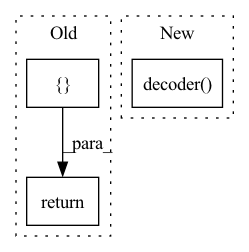

Pattern ID :3147
Before Change
for block in self.decoder:
x = block(x, class_with_style_code)
return {
"img": self.to_rgb(x),
"content_code": content_code,
"style_code": style_code
}
class Discriminator(nn.Module):
After Change
class_with_style_code = self.class_style_modulation(class_with_style_code)
adain_params = self.modulation(class_with_style_code)
generated_img = self.decoder( regularized_content_code, adain_params)
return {
"img": generated_img,
"content_code": content_code,In pattern: SUPERPATTERN
Frequency: 4
Non-data size: 3
Instances Fragment ID: 16868561
Project Name: avivga/overlord
Commit Name: 5fdf4019e9ff74b0574e25f5c6e8dc6a5e588cbe
Time: 2020-05-23
Author: avivga@gmail.com
File Name: model/modules.py
M Class Name: Generator
N Class Name: Generator
M Method Name: forward(4)
N Method Name: forward(4)
M Parent Class: nn.Module
N Parent Class: nn.Module
M File Name: model/modules.py
N File Name: model/modules.py
M Start Line: 59
M End Line: 93
N Start Line: 37
N End Line: 66
Before Change
for block in self.adains:
x = block(x, class_code.view((batch_size, -1)))
return {
"img": self.convs(x),
"content_code": content_code
}
class Discriminator(nn.Module):
After Change
x = torch.cat((content_code_regularized, class_code), dim=1)
return {
"img": self.decoder( x) ,
"content_code": content_code
}
Fragment ID: 16868560
Project Name: avivga/overlord
Commit Name: 2e57d3e1542653b97b1c30947259f93314cdf3e4
Time: 2020-07-23
Author: avivga@gmail.com
File Name: model/modules.py
M Class Name: Generator
N Class Name: Generator
M Method Name: forward(3)
N Method Name: forward(3)
M Parent Class: nn.Module
N Parent Class: nn.Module
M File Name: model/modules.py
N File Name: model/modules.py
M Start Line: 51
M End Line: 75
N Start Line: 35
N End Line: 53
Before Change
self.args = args
def forward(self, x: torch.Tensor):
return self.decoder.generate(torch.LongTensor([ self.args.bos_tokenAfter Change
def forward(self, x: torch.Tensor, tgt_seq: torch.Tensor, **kwargs):
encoded = self.encoder(x)
out = self.decoder( tgt_seq, context=encoded, **kwargs)
return out
@torch.no_grad()
def generate(self, x: torch.Tensor): Fragment ID: 16868563
Project Name: lukas-blecher/latex-ocr
Commit Name: e2b55fb4715f3ab5792f7a1accd07b737c744f96
Time: 2022-05-19
Author: yuhang.tao.email@gmail.com
File Name: pix2tex/models/utils.py
M Class Name: Model
N Class Name: Model
M Method Name: forward(3)
N Method Name: forward(2)
M Parent Class: nn.Module
N Parent Class: nn.Module
M File Name: pix2tex/models/utils.py
N File Name: pix2tex/models/utils.py
M Start Line: 17
M End Line: 18
N Start Line: 16
N End Line: 19
Before Change
return output
else:
outputs = []
noutputs = []
for wc in self.wblocks:
outputs.append(wc(output))
outputs=torch.stack(outputs).unsqueeze(0)
for nc in self.nblocks:
noutputs.append(nc(output))
return outputs, noutputs
class WBlock(nn.Module):
Define a linear block for WAfter Change
def forward(self, input):
Standard forward
output = self.encoder(input)
output = self.decoder( output)
return output
class MobileResnetEncoderSty2(nn.Module):
def __init__(self, input_nc, output_nc, ngf, norm_layer=nn.InstanceNorm2d, Fragment ID: 16868562
Project Name: jolibrain/joligan
Commit Name: 9a512b0d50106ae0f1c8a9c6f4f933c2c9ee1326
Time: 2021-02-05
Author: pnsuau@wanadoo.fr
File Name: models/modules/resnet_architecture/mobile_resnet_generator.py
M Class Name: MobileResnetGenerator
N Class Name: MobileResnetGenerator
M Method Name: forward(2)
N Method Name: forward(2)
M Parent Class: nn.Module
N Parent Class: nn.Module
M File Name: models/modules/resnet_architecture/mobile_resnet_generator.py
N File Name: models/modules/resnet_architecture/mobile_resnet_generator.py
M Start Line: 150
M End Line: 169
N Start Line: 85
N End Line: 87